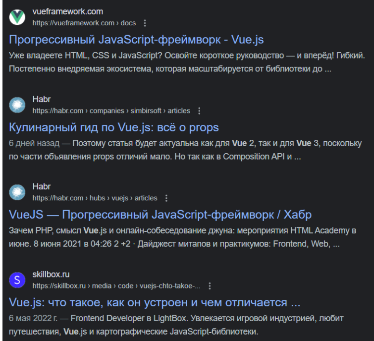
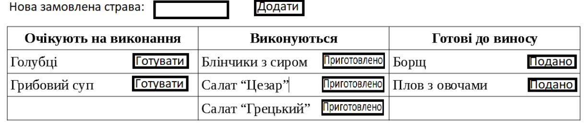

Урок 1
-
Завдання 1
Вводимо логіна і пароль. Якщо логін вірний відображаємо смайл. Якщо ні, то:
- якщо логін = Іван – колір повідомлення про помилку синій
- якщо хтось інший, то колір повідомлення червоний
-
Завдання 2
З випадаючого списку вибираємо клас квитка у літаку. Якщо
- бізнес - виводимо елементи для вибору газети та коньяку (якщо вибрано коньяк, то запропонувати закуску (так/ні)), на фоні зображення бізнес кают
- економ – виводимо елементи для вибору типу пива і чипсів, на фоні хмарки.
-
Завдання 3
Елемент тренажера англійської. Виводимо зображення елемента і слово. Користувач вводить відповідь. Якщо вірно – відтворюємо фразу «Добре. Молодець!» (і додаємо зелену рамку до елемента), якщо ні - то відтворюємо фразу «Невірно, спробуйте ще раз» (і додаємо червону рамку).
-
Завдання 4
Вивести список як маркований список з елементами у форматі (name: salary)
-
Завдання 5
Самостійно сформуйте масив даних та виведіть фрагмент на зразок поданого (дані не обов’язково повинні співпадати)
 -
Завдання 6
Задача. На кухню поступають замовлення. Спочатку ми додаємо їх у список “Очікують на виконання”, якщо повар береться робити — замовлення переходить у список “Виконуються”, якщо замовлення виконано — переходить у список “Готові до виносу”. Якщо натиснути на “Подано” - страва зникає з таблиці
Підказка: тут треба зберігати 3 масиви страв ( waitingList, processingList, completedList)